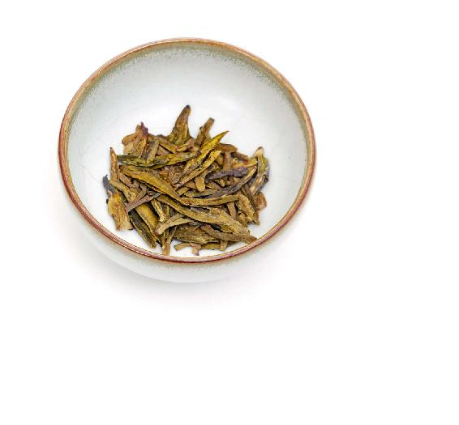
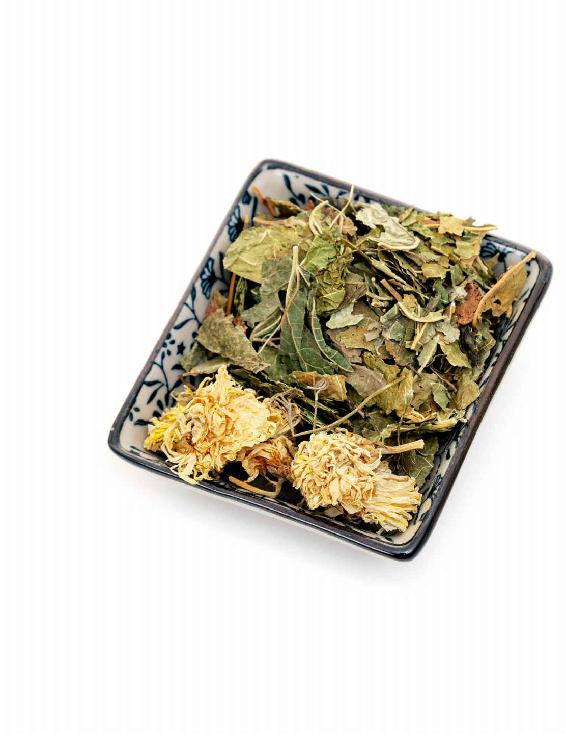
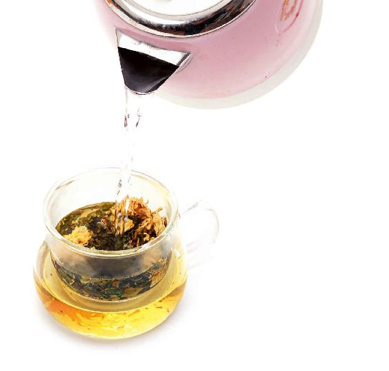
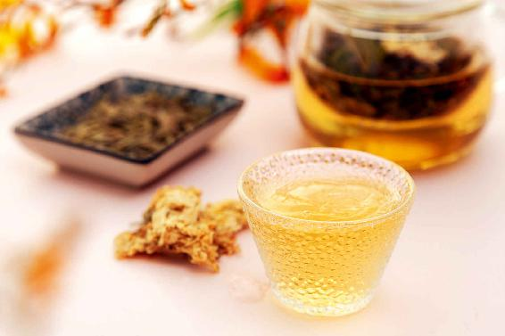
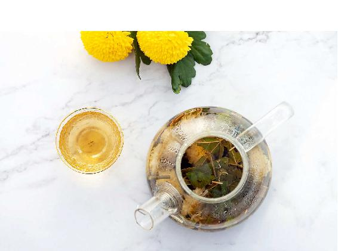
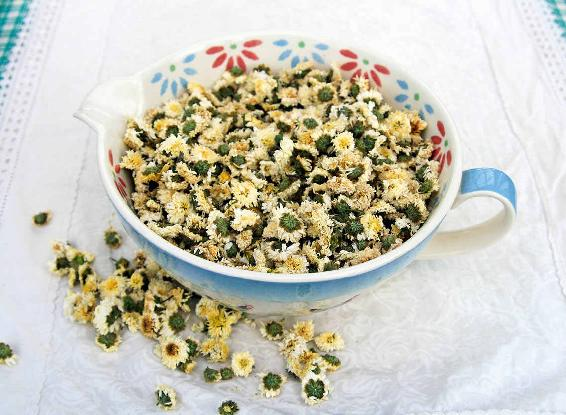

惊蛰节气开始，风热感冒和风热咳嗽也会逐渐增多，我给您分享一道惊蛰节气喝的一道防感冒的茶饮，它既可以用来预防风热感冒，也可以用来调理风热感冒。
桑菊茶


原料：白菊花6朵，桑叶5克，绿茶1克。

做法：
这三样原料像平时泡茶那样冲泡就可以了，大约泡上3分钟就可以饮用。可以反复地冲泡。
允斌叮嘱：
1.当您泡的时候，不要只是在旁边干等3分钟，最好是利用茶水的雾气来熏一熏眼睛。因为春天不仅会流行风热感冒，还会流行结膜炎，如果用茶水来熏一熏眼睛，对缓解眼睛的干燥是有一定作用的，同时还可以消炎杀菌。
2.容易在春天感染红眼病的朋友，可以把茶饮中的白菊花换成野菊花，这样效果会更好。
3.每天只需把它当成茶水来饮用就可以了，饮用的次数您可以根据一天喝水的量来决定。

喝这道茶饮可以清热、排毒、抗炎，对于预防由风热感冒引起的头晕、咽喉痛和干咳都有一定的效果。春天容易上火、有风热的朋友喝这道茶比较合适。如果您风热感冒初起，刚觉得自己有一点点头晕、喉咙痛，马上喝这道茶，可以及时阻止感冒的发展。
当然，如果您不需要清热，那您可以只喝惊蛰节气的食方——黄豆萝卜汤来补身体。
读者评论：泡了一杯桑菊茶，一小时后就退热了
黄淑琴快乐精灵 ：昨天有点咳嗽，低热37.9℃，头晕，晚上泡了一杯桑菊茶，一小时后就退热了，早上起来就好了。
风热感冒和风寒感冒之间最明显的区别就是看嗓子痛不痛。如果嗓子痛，这是风热感冒；嗓子不痛，这是风寒感冒。
秋冬季的时候，我们容易得风寒感冒，表现是头痛、怕冷、鼻塞、流清鼻涕、不出汗；而春夏季的时候人容易得风热感冒，一般是由受热引起的，或者是从风寒感冒转化而来的，表现为头晕、嗓子痛、发热、鼻涕发黄。

得了风热感冒，觉得嗓子痛，就可以喝这道茶，只需把它的量加倍。也就是说，白菊花可以加倍，绿茶也可以多放一些，桑叶也可以再多加一把，这样来喝效果就会比较好。
如果您嗓子疼痛已经很厉害了，而且扁桃腺都有点红肿了，您可以把白菊花换成黄菊花，最好是换成野菊花。野菊花对调理咽喉肿痛的效果更好。
每种菊花的功效都是不一样的。平时保健、预防，喝白菊花就可以，因为白菊花比较平和，它的作用主要是清肝、明目；经常上火的年轻人可以喝黄菊花，因为黄菊花的作用主要是疏风散热。

桑菊茶防感冒，如果您是用来预防风热感冒的话，用白菊花足矣；但如果您已经有一点风热感冒的症状，或者您是容易上火的人，可以直接用黄菊花。如果您平时眼睛经常干涩就用白菊花；如果在春天容易眼睛发红，就用黄菊花。
野菊花清热解毒的作用特别强，但它的凉性也是最强的，所以我们日常泡茶一般不用它。它只用来入药，您要到药店才能买到野菊花。
野菊花能解咽喉的毒，比如扁桃腺发炎，咽喉肿痛、肿大，或者年轻人长了粉刺、疖子，用野菊花效果就比较明显。
三种菊花，按寒凉性排序的话，野菊花最寒，黄菊花次之，白菊花相对平和。因此，如果您脾胃虚寒，自然知道该选择白菊花了，而且量还不能太大。
白菊花、黄菊花、野菊花都有一个特点，就是都作用于人体的上部，特别是头部。
菊花有一个很重要的功效——升举清阳，它可以让人体的清气往上升，也能引药性上行。总之，它是一个药引子。
风热感冒的主要症状是头晕、咽喉痛、流黄鼻涕、咳嗽等，用菊花就可以把药性引到头部。桑菊茶里配的桑叶和绿茶，都有消炎、解毒、清风热的功效，它们都是利用菊花升举清阳的特点把其药性往上引。
桑叶是疏散风热的，对于调理风热感冒很有效果。它可以清肺润燥，还可以清肝明目，对肺热引起的燥咳是很有效果的，它特别擅长清除肺里的热。
桑叶还有补益的作用，正所谓“人参热补，桑叶清补”，古人认为常服桑叶能补髓填精，使人返老还少。春天睡眠不好的人，多吃桑叶会有帮助。
其实，绿茶也有抗病毒的作用，它还可以生津止渴、润燥。当您咽喉肿痛的时候，单喝菊花的效果并不是很明显，加上绿茶之后，就可以达到最好的效果。
有一年，我在深圳电视台录节目，主持人当时得了严重的风热感冒，喉咙已经肿到连说话都很困难的地步，当时因为一天里连续录节目，没有时间出去买药。我看到节目现场有一个喝茶的朋友，就跟他要了一点绿茶、一点菊花，然后配在一起，让主持人喝下去。午饭过后，他的喉咙就好多了，可以继续录节目了。
菊花和绿茶搭配，调理由风热感冒引起的咽喉肿痛是很有效果的，如果再加上桑叶，还可以调理咳嗽不止。
在惊蛰节气期间，如果只是想预防风热感冒，这个茶饮喝的次数和量，还要看您的身体属于哪种类型。如果您内热比较重，经常上火，还容易得风热感冒，那您可以每天喝；如果您内热不重，脾胃又比较虚寒，您每次就浅尝辄止，隔几天喝一次，或者是在有了风热感冒迹象的时候再来喝它。
有些朋友问：“孕妇能不能喝？”如果孕妇已经得了风热感冒是可以喝的。没有风热的孕妇，可以单独喝桑叶茶，桑叶有促孕安胎的作用。
还有的朋友想给几岁的小孩喝，问可不可以。如果孩子已经有了风热感冒的迹象，可以给他喝，但要把绿茶去掉，多放一点桑叶。桑叶营养丰富，既补人又不上火，大人小孩都可以当食物来吃。
有的朋友问桑菊茶要喝多久。其实，这道茶饮是在春夏用来预防风热感冒的，要喝多久完全看您的体质。
如果您喝了几天，感觉自己的风热已经清掉了，那就不需要再喝了。如果突然又有了风热感冒的迹象，那您就不妨再喝几天。
桑菊茶是防感冒茶，不是补益茶。这道茶饮是用来预防风热感冒的，只有在需要的时候才喝，而在其他的时间，如果您想要清补可以单独喝桑叶茶。